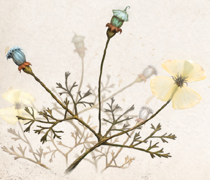

Der seltene Bleichmohn (Weißer Mohn) gedeiht beinahe ausschließlich in großen Höhen aventurischer Gebirge. Mit anderen Mohnarten teilt er den aufrechten, sich verzweigenden Stängel sowie die fünfblättrigen, schlichten Blüten. Mit einer Höhe von nur einem Spann ist er aber die mit Abstand kleinste Mohnpflanze. Pflanzenkundige nahmen lange an, bei dem unscheinbaren Pflänzlein handele sich um eine verkümmerte Abart des Bunten Mohns, die sich aufgrund der harten Bedingungen im Gebirge nicht besser entwickelt. Von Ingerimm bis Rahja zeigt sich die flachsweiße, selten auch leicht farbig schimmernde Blüte. Fünf durchscheinende Blütenblätter umstehen eine bläulich schimmernde Samenkapsel. Sie kann im Rondra geerntet werden.
Bleichmohn ist ein bewährtes Schmerzmittel. Die Kapseln können direkt nach der Ernte genossen werden, und eine größere Menge davon unterdrückt Schmerzen zuverlässig. Aufgrund der unterschiedlichen Anreicherung des Wirkstoffs in den Samen ist der Bleichmohn jedoch schwer zu dosieren, und seine rauschhafte Wirkung benebelt den Verstand des Konsumenten schnell. Diese Unwägbarkeit lässt sich durch die Zubereitung von „Schmerzwein“ umgehen. Zu seiner Herstellung werden Samenkapseln des Bleichmohns in mit Weinstein versetztem Alkohol eingeweicht und nach Zugabe von Alraune eingekocht. Hieraus ergibt sich eine Lösung, die genau dosiert werden kann, indem sie beispielsweise Tee beigemengt wird. Bleichmohn ist aus dem Betrieb von Tempeln oder Instituten, an denen arkane wie profane Heilkunst gelehrt und praktiziert werden, kaum wegzudenken. So wird er vor schweren Eingriffen verabreicht und ist eine beliebte Zutat in Heilsalben. Um den gleichbleibend hohen Bedarf zu decken, werden daher immer wieder Abenteurer angeworben, um auf die gefährliche Suche nach dem in entlegenen Gegenden gedeihenden Bleichmohn zu gehen.
Alternative Namen: Weißer Mohn
Verbreitung:
Landschaftstyp: Gebirge
Regionen: Nord- und Mittelaventurische Gebirge, Südliche Gebirge
Suchschwierigkeit: -2
Bestimmungsschwierigkeit: 0
Anwendungen: 1/2/3/4/5/6
Wirkung:
Roh:
Berührung: keine
Einatmung: keine
Verzehr: 1 Anwendung lässt den Konsumenten 1W3+3 Stunden lang die Abzüge von zwei Stufen Schmerz ignorieren.
Bei Stufe IV wird der Konsument dennoch Handlungsunfähig.
Mehrere Kapseln erhöhen die Wirkungszeit um 1W3+3 Stunden (bis zu einem Maximum von 24 Stunden).
Pro Anwendung, die eingenommen wird, wirft die Meisterin zudem 1W3 und addiert die Ergebnisse.
Das addierte Ergebnis ist die Erleichterung von Proben auf Selbstbeherrschung (Folter widerstehen oder Handlungsfähigkeit bewahren).
Liegt das addierte Ergebnis von mehreren Anwendungen über 2, so gilt zwar die Erleichterung, jedoch werden alle Punkte über 2 nacheinander von den Eigenschaften KL, GE, IN, FF abgezogen (bei einem addierten Ergebnis von 7 also KL -2, GE, IN, FF je -1).
Verarbeitet: siehe Rezepte
Preis: 10 / 50 Silbertaler
Rezepte:
Elixiere: Schmerzwein, Heilsalbe
Alltagsarzneien und Volksbrauchtum: Bei den Bewohnern der Berge kursieren Legenden von Bleichmohnhonig, der jeden Schmerz hinfortgleiten lässt und angenehme Träume verschafft.
Ihn von den oft wild gewordenen Bienen zu erhaschen sei äußerst schwierig, doch immerhin werde man direkt mit goldenem Balsam belohnt.
Bei Alchimisten ist er hoch begehrt, doch auch die Boronkirche und Mokoschapriesterinnen lassen nach ihm suchen.
Haltbarkeit:
Roh: siehe Haltbarmachung